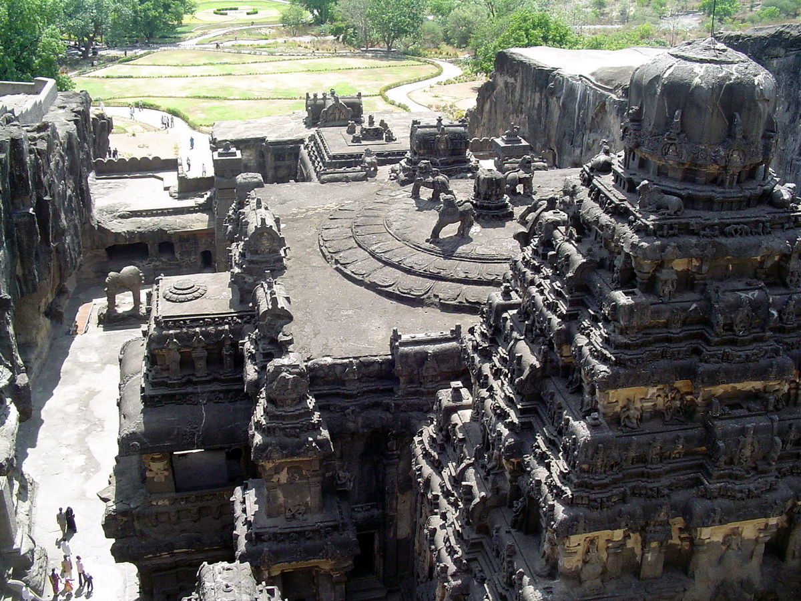
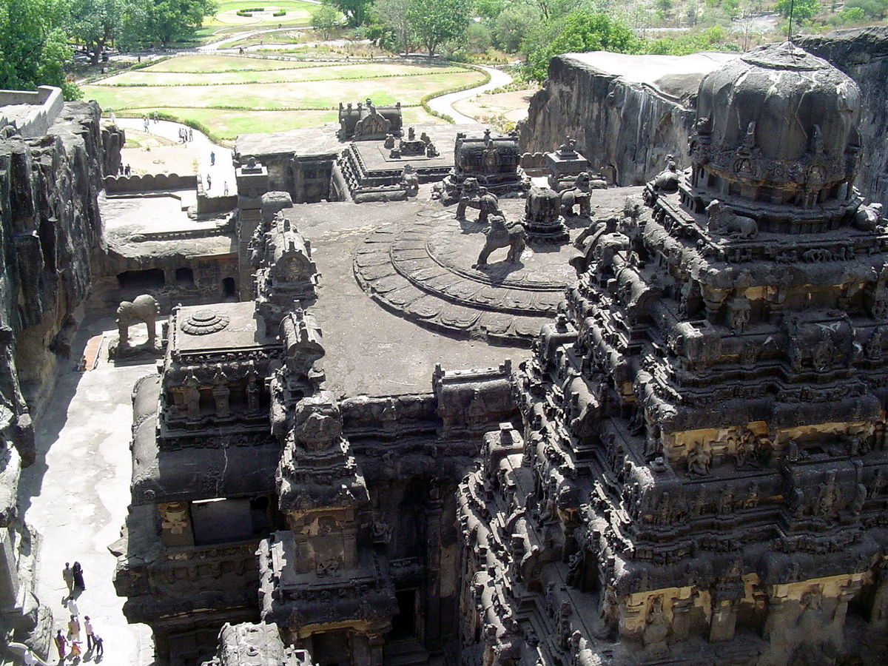

Tourism
With Gateway of India, Sea link, Siddhivinayak, Chhatrapati Shivaji Terminus and Marine drive in Mumbai,
Sai Baba Temple in Shirdi, Mahalaxmi Temple in Kolhapur, Trimbakeshwar Shiva Temple in Nashik,
Mahabaleshwar (hill station), historical monuments in Aurangabad and many more places to visit,
Maharashtra has indeed become a tourist destination. The hotel industry in Maharashtra is vast and
booming.
Tourist spots in the state like Ajanta and Ellora Caves in Aurangabad district, Elephanta Island in
Raigad district and Gateway of India in Mumbai reportedly witnessed a sharp decline in the number of
visitors.[120] Hotel, cab and private bus businesses in the state also reported a high number of booking
cancellations in March.
 
